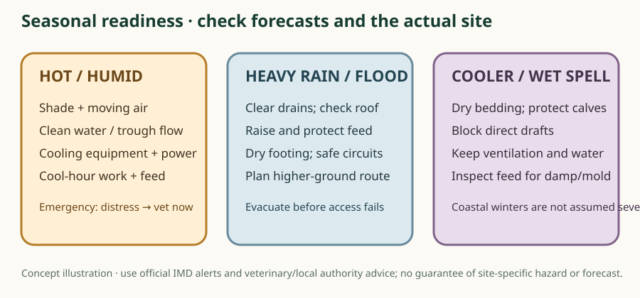

Season-by-season action plan

Local weather evidence: IMD’s Andhra Pradesh 2024 climate statement reports a state-average annual rainfall of 1,059.4 mm versus a 914.9 mm normal, and identifies West Godavari’s 2024 annual rainfall departure as +24%. It records very heavy rainfall at Tadepalligudem (133 mm on 19 July) and Narsapuram (140.7 mm on 31 August). These are single-year/event observations, not a long-term forecast, farm flood map or proof that a specific leased plot is safe/unsafe. Check current IMD alerts and inspect the parcel in wet conditions.
IMD: Statement on Climate for Andhra Pradesh, 2024
Hot and humid periods
Check shade, fans/air movement, water flow and power before heat rises. Move heavy work and feed delivery to cooler hours where practical. Cooling/bathing is for whole-body heat management; maintain dry, non-slip resting floors. Udder sanitation is a separate clean-milking step, not a cooling method.
Watch for rapidly increasing breathing, open-mouth breathing, weakness, altered awareness or collapse. Severe signs need immediate veterinary help. If safe, move to shade and improve airflow while calling; do not force water into a weak animal. Prepare a power-failure plan for fans/pumps and alternate water access.
Shade and airflow checked before the hot period
Water trough, pump and backup supply checked
Fan/sprinkler wiring and safe operation checked
Worker knows heat-distress warning signs and vet contact
Monsoon, heavy rain and cyclone alerts
Before forecast severe weather, clear drains, check roof/fence, elevate dry feed and medicines, protect clean water, keep electrical connections dry and identify a safe higher route and transport contact. Keep milk-handling surfaces clean and prevent floodwater entering feed/water areas. Do not enter moving floodwater or handle fallen live wires.
Evacuate animals before access is cut off if authorities/local assessment indicates risk. Never wait until water surrounds the shed. After inundation, do not use contaminated water/feed; ask authorities/veterinarian how to assess contamination. Check hoof/skin problems and report illness.
Drain and roof outlets cleared; leak repairs done
Feed, medicines and records raised above likely water level
Electrical isolation and emergency lighting plan checked
Higher-ground route, transporter and owner contact confirmed
Cooler and wet spells
Do not assume a harsh winter climate in coastal West Godavari. Respond to actual local conditions: keep calves dry and protected from direct drafts, retain ventilation, avoid persistently wet bedding and keep clean drinking water available. Watch young calves and sick animals more closely for reduced appetite, cough or nasal discharge.
Calf bedding and resting areas dry
Draft protection without sealing ventilation
Water points and feed storage checked
Bathing, cooling and udder sanitation are different
- Cooling: shade, airflow and safe body wetting/showers during heat stress; follow local veterinary/husbandry advice and avoid slippery buildup.
- Bathing: whole-animal washing for cooling/cleanliness when appropriate; it is not a substitute for ventilation or safe water access.
- Udder sanitation: clean-milking preparation using clean water/approved methods and individual clean towels; keep the udder/teats dry before milking and keep the milk vessel uncontaminated.
These seasonal checkboxes are browser-local checklist marks, not a weather alert or emergency call. Use the IMD forecast/official alerts for current conditions and the surveyed site plan for evacuation.
Why it matters
During monsoon, keep roof runoff away from animal areas, clear drains before storms, maintain dry resting places and non-slip routes, store feed off the floor, prevent contaminated water pooling, control mosquitoes/flies through sanitation and locally approved methods, and prepare a safe route to higher ground if flood risk exists.
Practical guidance
In cooler or windy spells, provide dry bedding and protection from drafts while retaining ventilation. Calves and sick animals need closer observation. Do not seal sheds so tightly that air quality and moisture worsen.
Use this safely
Seasonal checklist: inspect roof/fencing/drains before rains; verify pump, backup water and electricity; protect concentrates and medicines; check cooling equipment before hot months; review heat-alert staffing; consult veterinary services about local disease campaigns and vaccination timing.